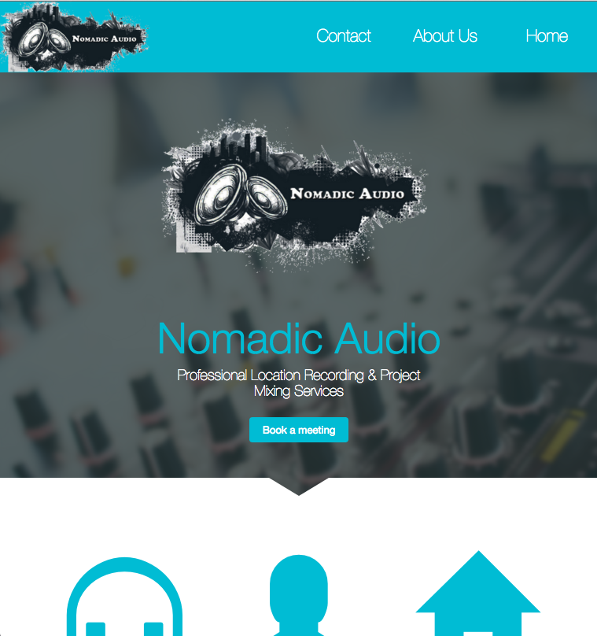
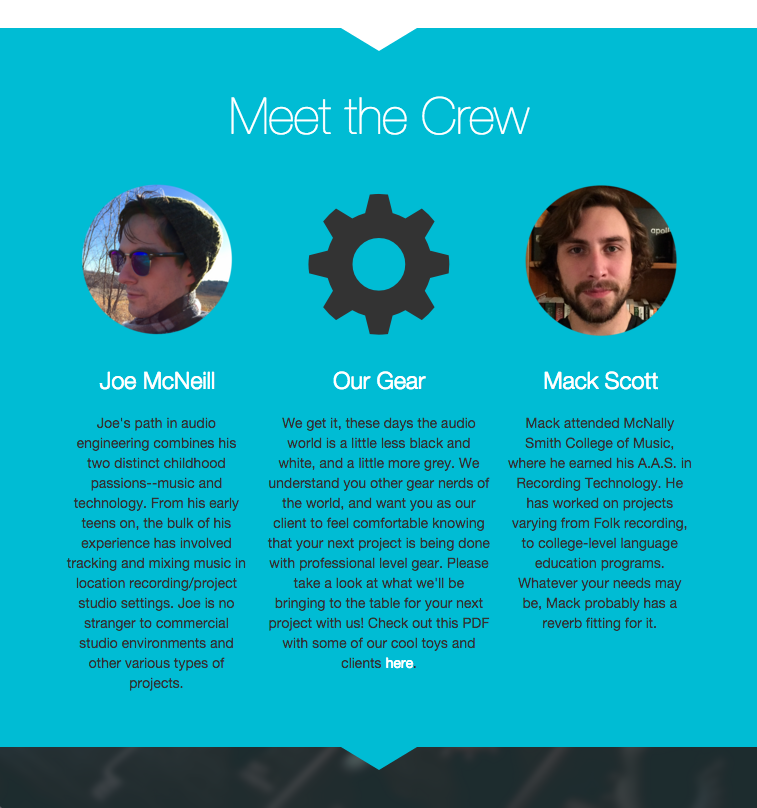

Nomadic Audio is an audio production company that hired me to build them a website. They specialize in on site recording, which means that if you want a professional or music grade recording they an provide that at any location.
After consulting with the client, I decided that Nomadic Audio's digital needs were all content based. There would be little or no javascript required to complete the project. As an audio production company, Nomadic Audio's business is "pseudo artistic". Therefore, their other primary need was an asthetically pleasing website. After studying competing websites, I decided they needed a clean cut single page application style website.
Here is a current link to the website that I built for Nomadic Audio and a couple of screenshots.
 